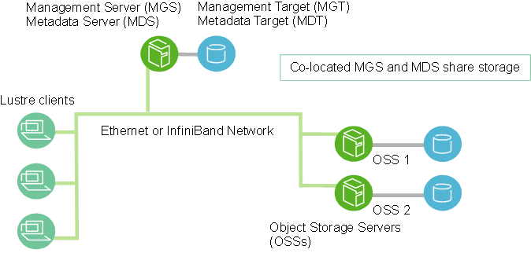

Storage¶
Sharing files and data¶
Newly created user folders are not accessible by other groups or users on CSCS systems. Linux Access Control Lists (ACLs) let you grant access to one or more groups or users.
In traditional POSIX, access permissions are granted to user/group/other in mode read/write/execute.
The permissions can be checked with the -l option of the command ls.
For instance, if user1 owns the folder test, the output would be the following:
$ ls -lahd test/
drwxr-xr-x 2 user1 csstaff 4.0K Feb 23 13:46 test/
ACLs are an extension of these permissions to give one or more users or groups access to your data.
The ACLs of the same test folder of user1 can be shown with the command getfacl:
$ getfacl test
# file: test
# owner: user1
# group: csstaff
user::rwx
group::r-x
other::r-x
The command setfacl is used to change ACLs for a file or directory.
To add users or groups to read/write/execute on a selected file or folder, use the -M,--modify-file or -m,--modify flags to modify the ACL of a file or directory.
give user2 read+write access to test
Where test is owned by user1.
The -X,--remove-file and -x,--remove options will remove ACL entries.
remove user2 access to test
This reverts the access that was granted in the previous example.
Access rights can also be granted recursively to a folder and its children (if they exist) using the option -R,--recursive.
Note
This applies only to existing files - files added after this call won’t inherit the permissions.
recursively grant user2 access to test and its contents
To set up a default so all newly created folders and dirs inside or your desired path will inherit the permissions, use the -d,--default option.
recursively grant user2 access to test and its contents
user2 will have access to files created inside test after this call:
Info
For more information read the setfacl man page: man setfacl.
Lustre tuning¶
Capstor and Iopsstor are both Lustre filesystem.

As shown in the schema above, Lustre uses metadata servers to store and query metadata, which is basically what is shown by ls: directory structure, file permission, and modification dates.
Its performance is roughly the same on Capstor and Iopsstor.
This data is globally synchronized, which means Lustre is not well suited to handling many small files, see the discussion on how to handle many small files.
The data itself is subdivided in blocks of size <blocksize> and is stored by Object Storage Servers (OSS) in one or more Object Storage Targets (OST).
The block size and number of OSTs to use is defined by the striping settings, which are applied to a path, with new files and directories inheriting them from their parent directory.
The lfs getstripe <path> command can be used to get information on the stripe settings of a path.
For directories and empty files lfs setstripe --stripe-count <count> --stripe-size <size> <directory/file> can be used to set the layout.
Striping settings on a directory are only applied to files added after the command is run. The simplest way to have the correct layout is to copy to a directory with the correct layout.
A block size of 4MB gives good throughput, without being overly big…
… so it is a good choice when reading a file sequentially or in large chunks, but if one reads shorter chunks in random order it might be better to reduce the size, the performance will be smaller, but the performance of your application might actually increase. See the Lustre documentation for more information.
Settings for large files
Remember: Settings applied with lfs setstripe only apply to files added to the directory after this command.
Lustre also supports composite layouts, switching from one layout to another at a given size --component-end (-E).
With it it is possible to create a Progressive file layout switching --stripe-count (-c), --stripe-size (-S), so that fewer locks are required for smaller files, but load is distributed for larger files.
Good default settings
Iopsstor vs Capstor¶
Iopsstor uses SSD as OST, thus random access is quick, and the performance of the single OST is high. Capstor on another hand uses hard disks, it has a larger capacity, and it also have many more OSS, thus the total bandwidth is larger. See for example the ML filesystem guide.
Many small files vs. HPC File Systems¶
Workloads that read or create many small files are not well-suited to parallel file systems, which are designed for parallel and distributed I/O.
In some cases, and if enough memory is available it might be worth to unpack/repack the small files to in-memory filesystems like /dev/shm/$USER or /tmp, which are much faster, or to use a squashfs filesystem that is stored as a single large file on Lustre.
Workloads that do not play nicely with Lustre include:
- Configuration and compiling applications.
- Using Python virtual environments
At first it can seem strange that a “high-performance” file system is significantly slower than a laptop drive for a “simple” task like compilation or loading Python modules, however Lustre is designed for high-bandwidth parallel file access from many nodes at the same time, with the attendant trade offs this implies.
Meta data lookups on Lustre are expensive compared to your laptop, where the local file system is able to aggressively cache meta data.
Squash Python virtual environments with uenv¶
Python virtual environments can be very slow on Lustre, for example a simple import numpy command run on Lustre might take seconds, compared to milliseconds on your laptop.
The main reasons for this include:
- Python virtual environments contain many small files, on which Python performs
stat(),open()andread()commands when loading a module. - Python pre-compiles
.pycfiles for each.pyfile in a project. - All of these operations create a lot of meta-data lookups.
As a result, using virtual environments can be slow, and these problems are only exacerbated when the virtual environment is loaded simultaneously by many ranks in an MPI job.
One solution is to use the tool mksquashfs to compresses the contents of a directory - files, inodes and sub-directories - into a single file.
This file can be mounted as a read-only Squashfs file system, which is much faster because a single file is accessed instead of the many small files that were in the original environment.
Step 1: create the virtual environment¶
The first step is to create the virtual environment using the usual workflow described in the Python environment documentation.
The recommended way to create a new virtual environment is to use the uv tool, which supports relocatable virtual environments and asynchronous package downloads. The main benefit of a relocatable virtual environment is that it does not need to be created in the final path from where it will be used. This allows the use of shared memory to speed up the creation and initialization of the virtual environment and, since the virtual environment can be used from any location, the resulting squashfs image can be safely shared across projects.
# start the uenv
# in this case the "default" view of prgenv-gnu provides python, cray-mpich,
# and other useful tools
uenv start prgenv-gnu/24.11:v1 --view=default
# unset PYTHONPATH and set PYTHONUSERBASE to avoid conflicts
unset PYTHONPATH
export PYTHONUSERBASE="$(dirname "$(dirname "$(which python)")")"
# create and activate a new relocatable venv using uv
# in this case we explicitly select the python interpreter from the uenv view
uv venv --python $(which python) --system-site-packages --seed --relocatable --link-mode=copy /dev/shm/sqfs-demo/.venv
cd /dev/shm/sqfs-demo
source .venv/bin/activate
# install software in the virtual environment using uv
# in this case we install install pytorch
uv pip install --link-mode=copy torch torchvision torchaudio \
--index-url https://download.pytorch.org/whl/cu126
# optionally, to reduce the import times, precompile all
# python modules to bytecode before creating the squashfs image
python -m compileall -j 8 -o 0 -o 1 -o 2 .venv/lib/python3.12/site-packages
A new virtual environment can also be created using the standard venv module. However, virtual environments created by venv are not relocatable, and thus they need to be created and initialized in the path from where they will be used. This implies that the installation process can not be optimized for file system performance and will still be slow on Lustre filesystems.
# start the uenv
# in this case the "default" view of prgenv-gnu provides python, cray-mpich,
# and other useful tools
uenv start prgenv-gnu/24.11:v1 --view=default
# unset PYTHONPATH and set PYTHONUSERBASE to avoid conflicts
unset PYTHONPATH
export PYTHONUSERBASE=/user-environment/env/default
# for the example create a working path on SCRATCH
mkdir $SCRATCH/sqfs-demo
cd $SCRATCH/sqfs-demo
# create and activate the empty venv
python -m venv --system-site-packages ./.venv
source ./.venv/bin/activate
# install software in the virtual environment
# in this case we install install pytorch
pip install torch torchvision torchaudio \
--index-url https://download.pytorch.org/whl/cu126
how many files did that create?
An inode is created for every file, directory and symlink on a file system. In order to optimise performance, we want to reduce the number of inodes (i.e. the number of files and directories).
The following command can be used to count the number of inodes:
find is used to list every path and file, and stat is called on each of these to get the inode, and then sort and wc are used to count the number of unique inodes.
In our “simple” pytorch example, I counted 22806 inodes!
Step 2: make a squashfs image of the virtual environment¶
The next step is to create a single squashfs file that contains the whole virtual environment folder (i.e. /dev/shm/sqfs-demo/.venv or $SCRATCH/sqfs-demo/.venv).
This is performed using the mksquashfs command, that is installed on all Alps clusters.
Hint
The -Xcompression-level flag sets the compression level to a value between 1 and 9, with 9 being the most compressed.
We find that level 3 provides a good trade off between the size of the compressed image and performance: both uenv and the container engine use level 3.
I am seeing errors of the form Unrecognised xattr prefix...
You can safely ignore the (possibly many) warning messages of the form:
Tip
The default installed version of mksquashfs on Alps does not support the best zstd compression method.
Every uenv contains a better version of mksquashfs, which is used by the uenv to compress itself when it is built.
The exact location inside the uenv depends on the target architecture, and version, and will be of the form:
Use this version for the best results, though it is also perfectly fine to use the system version.Step 3: use the squashfs¶
To use the optimised virtual environment, mount the squashfs image at the location of the original virtual environment when starting the uenv.
cd $SCRATCH/sqfs-demo
uenv start --view=default \
prgenv-gnu/24.11:v1,$PWD/py_venv.squashfs:$SCRATCH/sqfs-demo/.venv
source .venv/bin/activate
Remember that virtual environments created by uv are relocatable only if the --relocatable option flag is passed to the uv venv command as mentioned in step 1. In that case, the generated environment is relocatable and thus it is possible to mount it in multiple locations without problems.
cd $SCRATCH/sqfs-demo
uenv start --view=default \
prgenv-gnu/24.11:v1,$PWD/py_venv.squashfs:$SCRATCH/sqfs-demo/.venv
source .venv/bin/activate
Note that the original virtual environment is still installed in $SCRATCH/sqfs-demo/.venv, however the squashfs image has been mounted on top of it, so the single squashfs file is being accessed instead of the many files in the original version.
A benefit of this approach is that the squashfs file can be copied to a location that is not subject to the Scratch cleaning policy.
Warning
Virtual environments created by venv are not relocatable as they contain symlinks to absolute locations inside the virtual environment. This means that the squashfs file must be mounted in the exact same location where the virtual environment was created.
Step 4: (optional) regenerate the virtual environment¶
The squashfs file is immutable - it is not possible to modify the contents of .venv while it is mounted.
This means that it is not possible to pip install more packages in the virtual environment.
If you need to modify the virtual environment, run the original uenv without the squashfs file mounted, make changes to the virtual environment, and run step 2 again to generate a new image.
Hint
If you save the updated copy in a different file, you can now “roll back” to the old version of the environment by mounting the old image.